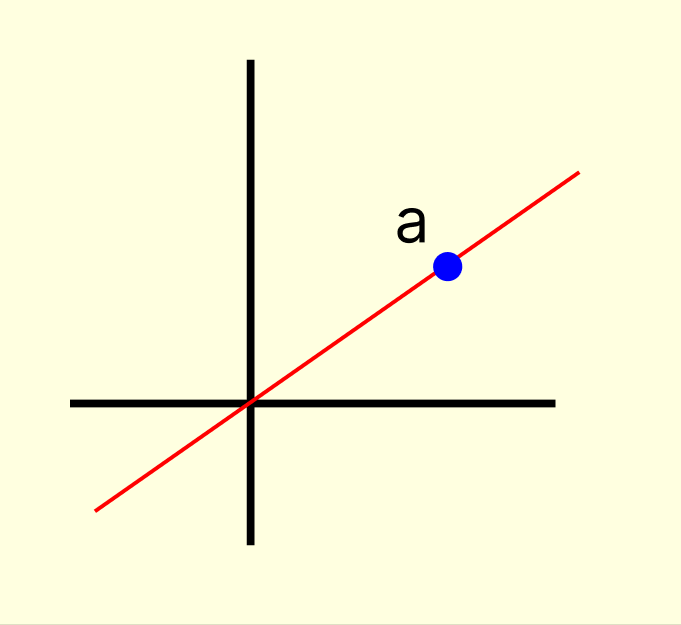
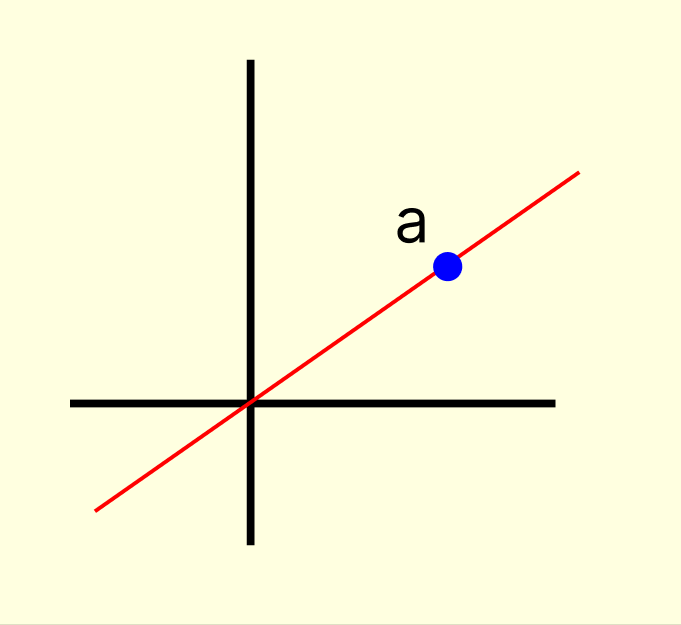

II. Construction of basis of R2
Choosing a ≠ 0
Choosing b ∉ span({a})

B = {a, b} is basis
NOTE: Consider the vector space R2 over R
(i) B = {(1, 0), (0, 1)} ⊆ R2
B is basis, dim R2 = 2
Coordinates of (a, b) are a and b w.r.t. the basis B
In particular, coordinates of (1, 2) are 1 and 2 w.r.t. the basis B.
(ii) B = {(1, 1), (1, 2)} ⊆ R2
B is basis, dim R2 = 2
Coordinates of (a, b) are a and b w.r.t. the basis B
In particular, coordinates of (1, 2) are 0 and 1 w.r.t. the basis B.
Choosing a ≠ 0
Choosing b ∉ span({a})
B = {a, b} is basis
If 0 ∈ B, B is not a basis
If 0 ∉ B, go to Step 2
(i) If B = {a}, B is basis? /
(ii) If B = {a, b, c}, B is basis? /
(iii) If |B| ≠ 2, B is basis? /
If B = {a, b}, B may or may not be a basis
b ∈ Span({a}) ⇒ B is not basis
b ∉ Span({a}) ⇒ B is basis
NOTE: Try it yourself for the vector space Rn over R for some other values of n